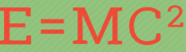
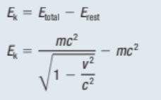

In physics, mass–energy equivalence is the relationship between mass and energy in a system’s rest frame, where the two values differ only by a constant and the units of measurement. The principle is described by Albert Einstein's famous formula:

This is Einstein’s famous equation
It means that the rest mass of an object and its energy are equivalent. This energy is called the object’s rest energy. The rest energy, E(rest), is the amount of energy an object at rest has with respect to an observer, and it does not change.
Callout
When an object is in motion, its total energy is larger than its rest energy. The relativistic kinetic energy, E(k), is the difference between the total energy of the object and its rest energy:

Conservation of mass–energy is the principle that rest mass and energy are equivalent.
The conservation of energy is a universal principle in physics and holds for any interaction, along with the conservation of momentum.
The classical conservation of mass, in contrast, is violated in certain relativistic settings. This concept has been experimentally proven in a number of ways, including the conversion of mass into kinetic energy in nuclear reactions and other interactions between elementary particles.
Mass conservation breaks down when the energy associated with the mass of a particle is converted into other forms of energy, such as kinetic energy, thermal energy, or radiant energy. Similarly, kinetic or radiant energy can be used to create particles that have mass, always conserving the total energy and momentum.